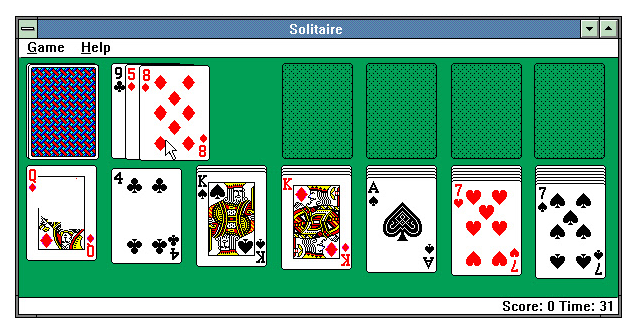
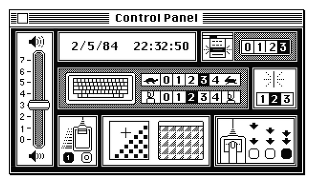

TRABAJOS / INTERFACES
X

Interfaz gráfica diseñada por Susan Kare para el programa MacPaint del sitema operativo de Apple.

También diseñó las cartas y la interfaz para Solitario, el icónico juego de los ordenadores de Microsoft.

Trabajando para Apple, se encargó del diseño de la interfaz del panel de control de su sistema operativo.